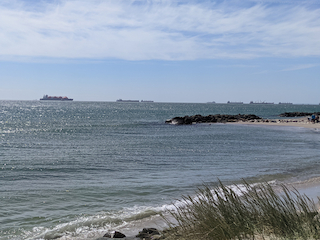
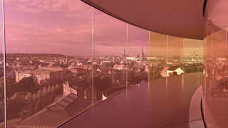
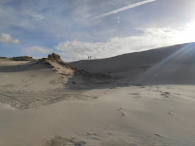
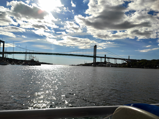
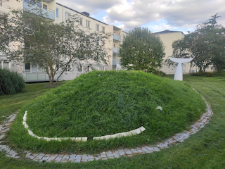
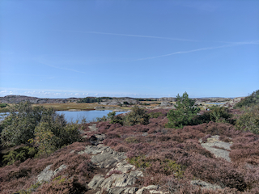
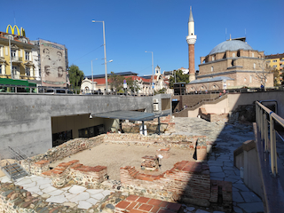
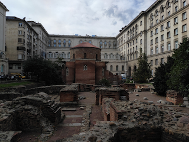
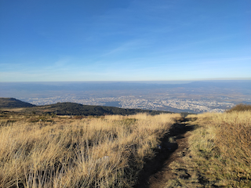

Galerie
Na cestách vznikají mraky fotek. Nechci jich sdílet moc - na to mám FB,
proto vyberu vždy dvě, tři krásné.
Dánsko

Skagen - severní bod Dánska

Aros - museum v Aarhusu

Poušť na severu Dánska
Švédsko

Výhled z obojživelného autobusu - Gothenburg

Velryba v parku u našeho bytu - Gothenburg

Brännö - ostrov u Gothenburgu
Bulharsko

Antické město Serdica a stanice metra - Sofia

Rotunda St. George - Sofia

Výhled na Sofii z hor